Usuario Invitado
Usuario Invitado
Indicadores UPC-SA
PEBI
Inicio
Bienestar
PEBI
Usuario Invitado
Bienestar - PEBI
Indicadores
Metas
Análisis
Informe
Procesos Estratégicos PEBI
Indicador
Seleccione el indicador
Indicador 1 "Tutorías POA"
Indicador 2 "Acompañamiento"
Indicador 3 "Articulación"
Indicador 4 "Atenciones SPADIES"
Deserción semestral
Fuente: Adaptado con datos del Sistema de información SPADIES
Nombre Indicador
1. Permanencia y tutoria estudiantil
Objetivo
Mide el número de estudiantes en alto riesgo que son atendidos en el programa de permanencia estudiantil.
Meta
80%
Nombre Indicador
2. Acompañamiento estudiantil
Objetivo
Mide el número de estudiantes atendidos por las diferentes estrategias en el programa de permanencia estudiantil.
Meta
40%
Nombre Indicador
3. Articulación programas académicos
Objetivo
Mide el número de programas académicos que implementan estrategias de acompañamiento en el programa de permanencia estudiantil.
Meta
90%
Nombre Indicador
4. Registros de sistema deinformación institucional
Objetivo
Mide el número de estudiantes registrados en los diferentes sistemas de información institucional y del ministerio de Educación Nacional
Meta
90%
Análisis
Aunque a medida que han pasado los semestres, se ha incrementado el número de estudiantes atendidos, aún no es suficiente, por ende es necesario mayor personal para la atención de tutorías y la atención psicosocial de los estudiantes.
Análisis
Una de las falencias encontradas para llegar a alcanzar un mayor número de estudiantes atendidos es la falta de docentes tutores para algunas asignaturas de alto riesgo académico y el número de psicólogas asignadas no es suficiente para la atención del personal estudiantil.
Análisis
Los programas de Contaduría Pública y Administración de empresas no han tenido tutorías académicas los últimos semestre lo que incide en el bajo porcentaje, adicional se tiene un programa de postgrado desde el semestre 2020-1, al cual no se le ha realizado ningún seguimiento desde el programa de permanencia y bienestar institucional, ya que ésta deserción aún no se ve reflejada en el sistema para la prevención y el análisis de la derserción en las Insituciones de Educación Superior SPADIES
Análisis
Aunque a medida que han pasado los semestres, se ha incrementado el número de estudiantes atendidos, aún no es suficiente, por ende es necesario mayor personal para la atención de tutorías y la atención psicosocial de los estudiantes. Sería viable implementar estrategias o proyectos donde los estudiantes con muy buen promedio en las asignaturas puedan dar tutorías a los etudiantes con bajo rendimiento académico.
Descargar Informe
Clic